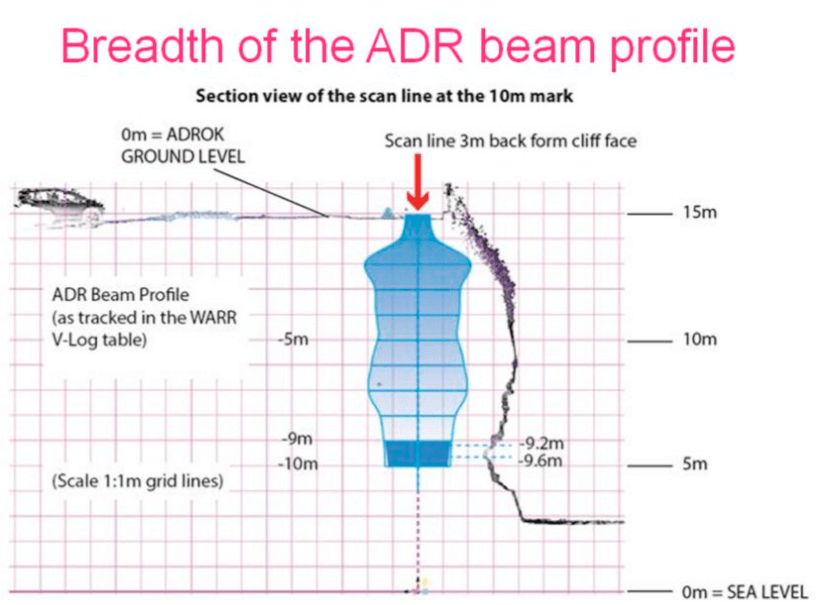
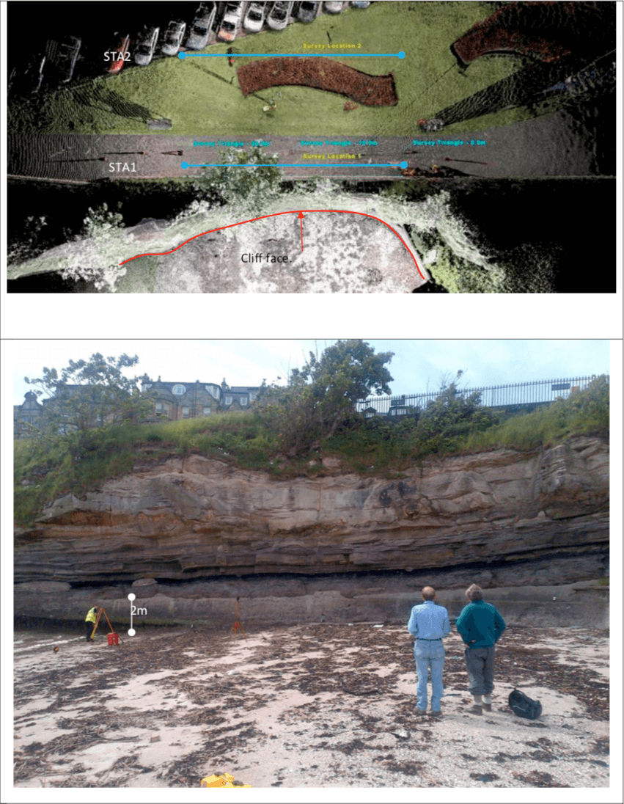
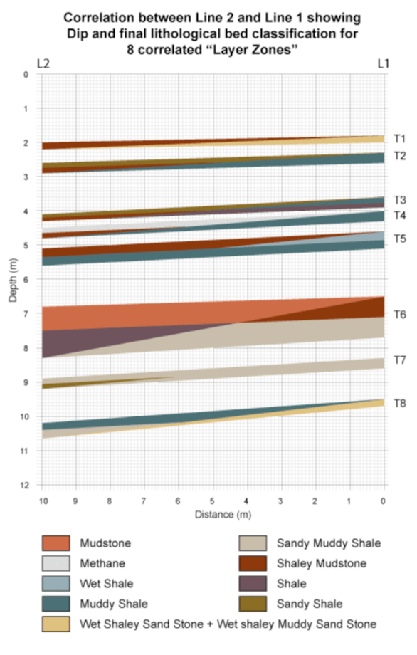

Near surface coal scans from clifftop in St Andrews, Scotland
Project aims
To map thin rock layers from 0 to 50m subsurface depth using ADR near-surface focussing technology at a cliff section in St Andrews, Scotland (figure 1)
Exploration/Project challenges
- Measure the tops of key rock layers within 10cm accuracy using ADR technology (figure 2).
- Propagate 50 metres below ground surface.
- Classify rock compositions every 10cm over 12m of exposed cliff face section.
- “Ground Truth” Adrok’s measurements using 3D laser survey and a manual graphic log.
Adrok’s Methodlogy & Results
To measure the depth below ground level, Adrok performed WARR tracking (Error Analysis), as follows:
- The cumulative errors from the six WARR tackers (Line 1) were within the client’s target of 10 cm for 50 metres.
- The average error over the 50m for all analysts was 5.6cm
- The maximum error for Dielectric tracking, over 50m, was 7.05 cm error per 50m (figure 3).
We were able to track the beam spread of our ADR signals in the cliff face (figure 4):
 Figure 4: Breadth of the ADR beam profile through the cliff section with depthSub division of the top 12m into 10 cm sections for both survey lines.
Compared measurements of energy and frequency returns directly for each line 1 and 2:
- E-ADR (Resonant energy)
- E-Gamma (Reflectivity)
- E-Mean (Mean energy)
- Spectral lines
- P-Scan space images
Spectral lines gave an indication of depositional setting. A coarsening upwards sequence with a greater proportion of sandy material nearer the top of the cliff.
Three main zones of deposition noted.
- Zone A: 1200-630 cm Mudstone/shale inter- dispersed with sandstone layers, characterised by bands of carbon.
- Zone B: 630-210 cm Mudstone and shale beds, very little sandstone is present and it is punctuated by bands of carbon rich layers
- Zone C: 210-60 cm Mainly sandstone, overlain by a carbon rich muddy layer (soil?)
In each 10-cm layer major carbon rich layers were defined when their presence was within the top 10% (Figure 5).
- In total 5 sequential zones of carbon have been deposed in zone A, with a further 6 in zone B (intermixed with shales and mudstones) and no carbon rich layers in zone C.
Dielectric measurements of the cliff subsurface section (figure 6) were calculated from the ADR survey, using Normal Move-out and Ray Tracing techniques.
Then, finally, scan lines 1 and 2 were cross- correlated for rock layers and dipping bed orientation (figure 7). Line 1 and line 2 were 15m apart North-South.
 Figure 1: (Above) Planimetric view of survey lines and cliff-face showing locations of line 1 and 2. (Below) Photo of the Scores Cliff- Face and survey area showing the exposed cliff face, from the top of which the vertical scanning surveys were carried out. Note a thin, formerly worked coal upon a basal seat earth and overlain by thin sandstone layers, above which is 3-4m of sandy muddy shale. There are several thin coals within this sequence.  Figure 7: Correlation of eight features (targets) between line 1 and line 2 indicating the dip of the beds.Conclusions & Recommendations
Overall, Adrok was able to identify and map all thin coal beds within a vertical depth range of 50m with great precision (+/- 0.05m) AND classify lithology at 10cm intervals.
Adrok was able to conclude the following:
- That the mean cumulative error of tracking all 50, 1m horizons from the surface down to 50m was +/- 0.056 m.
- For each of the 50, 1m layers the average error between layers was 0.001 m, and variation between the six operators was 0.008 m (Which surprised all six operators).
- The final overall range of cumulative error after 50m tracking between the 6 operators was only 0.0272 m.
- Spectral analysis method using spectral lines of known rocks and minerals was used to identify layers already visually identified, surveyed and scanned on the cliff face using a 3D laser camera and theodolites.
- Changes in relative composition of the rocks with depth can be tracked; areas of relative high concentrations of carbon, water, shale, dolomite, silica, mudstone and methane can be identified using spectral lines with good precision. These can be accurately cross-matched with other scans.
- Thin coal seams can be identified with good depth accuracy using secondary sampling.
- The spectral line results and secondary image sampling found a thin 47cm thick coal sequence at 4.5 -5 m depth matching visual logs.
- Relative changes in Dielectric constants identify depths at which distinct changes in composition occur.
- To prove the relationship between the possible coal layer identified on line one based on high dielectrics and spectral line correlations with carbon and methane, and the known exposed and eroded coal on the cliff face, a training area was selected based on an accurate survey reduction of the laser scan image of the coal face. When this training image was temporally scaled as a space-time image and subsequently analysed by FFT to produce spectral lines the resulting table (Error! Reference source not found. confirmed our hypothesis that this training area was largely composed of the spectral lines of carbon and methane similar to the second training sub-image image from STA2.
- Conclusion 10 confirms a positive spectral relationship between line 2 scanned 20m behind line STA1 at least 23m from the exposed coal on the cliff face.
- From the training area on line one and the laser scanned cliff face section, a vertical profile has been scaled and produced showing the mid scan section thorough the cliff with reference to the cliff edge, the exposed coal surface and the traced and interpreted coal surface on line one between 9-10 m in depth (Figure 4). The exposed coal surface on the cliff face extended from 9.2-9.6m in depth which was a subset of the spectrally analysed and tracked cliff section from 9-10 m. This clearly proves a very positive correlation between the training area and our mapped layer which showed evidence of carbon and methane from the spectral lines. This also showed that the exposed coal that the cliff face dipped very gently inland and possibly thickened. What is also significant is that the beam is not wide enough to extent outwards as far as the cliff edge. Visual mapping of rock boundaries exposed at the cliff edge can therefore be used as an independent check of the ADR mapping accuracies between line 2 and line 1 and the theoretical extension of the line 1 dipping boundaries (figure 7).
- We demonstrated that the ADR system and procedures can not only identify the top and bottom of a thin 20cm coal seam, but it can map the depth to the top of the coal seam with great accuracy (+/- 2cm).
- We showed there is a clear relationship between the exposed coal at the cliff face and the interpreted carbon and methane layers from STA1 and STA2. This verifies the important relationship between P- scans and WARRs and how this ADR methodology can be used for precision mapping of possible coal layer with high accuracy over 50m.
- Correlations can be made between Line1 and Line 2, including 8 targets which were noted on both lines and which defined the dip of the beds. The results from the correlation confirm that the beds dip inland (SW) 8 Dips were measured ranging from 1:14-1:50.
- In both survey lines there is a boundary layer (Line 1: 60-70cm, Line 2: 90-100 cm) near the surface representing a change in proportions of sand and mud, it is defined by a high percentage sandstone plus water mudstone value in both lines. Below this boundary, these the sandstone and mudstone values reduce significantly.
- Sandstone, which is one of the main rock types, in both survey lines is observed in fewer proportions than the other two rocks (mudstone and shale). In the first survey line sandstone is observed in two different zones, the first one is between 70cm to 200cm and the second one is between 950cm and 970cm. In the second survey line there are five layers of sandstone which are scattered through the whole depth range (150-160cm, 230- 240cm, 630-640cm, 810-820cm, 930- 940cm).
- By using high resolution ADR (using a bi- static system with a 2-4m beam over 12m scanning the geology at a micro-level of 10cm layers may be compared (using changes in spectral lines) and major changes in rock composition can be observed. Areas of high carbon content can be picked out, and compared with areas of high methane content to assist in identifying coal boundaries. These layers can be correlated between line 1 and 2 and basic lithology and depositional environment can be inferred (figure 7). It is recommended that the client consider utilising this methodology for future detailed shallow lithological mapping projects because of ADROK’s displayed high confidence levels in mapping both the correlated and tracked rock layers and distinguishing and classifying the rock types through this new semi-automated method of Spectral Line Lithological Mapping (SLLIM).